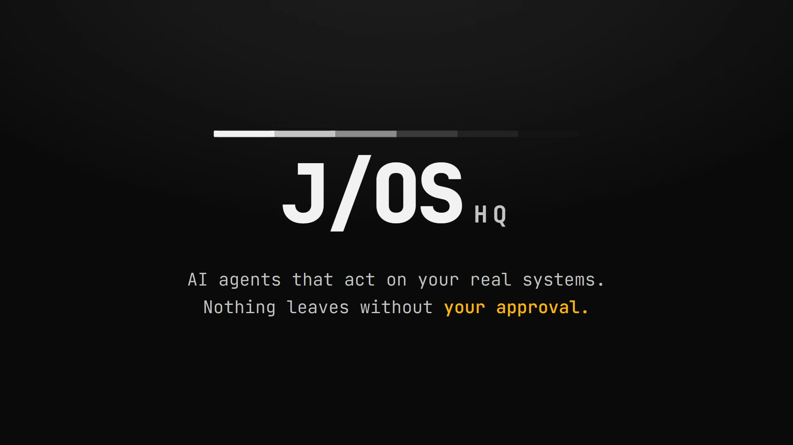

Human-in-the-Loop AI Agents: How My Approval Gate Works

An AI agent that can send an email can also send the wrong one. The same goes for an agent that raises invoices or publishes posts: the ability to act is exactly what lets it make a mistake in front of a customer, under your name. Human-in-the-loop AI agents are the standard answer, but the advice rarely says what the human actually approves, or what stops the agent from acting anyway.
This post shows how I answered both questions in J/OS HQ (HQ for short), the local command center I built to run AI agents on real business systems without anything leaving the machine unapproved. You'll get the three ways agents go wrong once they can act, the six-step gate that handles them, what that gate costs, and a checklist you can apply to your own agents, whatever tools you use.
What is a human-in-the-loop AI agent?
A human-in-the-loop AI agent is an AI agent that can plan and prepare actions on its own but can't run anything with a side effect until a person approves that exact action. Reading, searching and drafting happen freely; sending, creating, deleting, publishing and charging wait for a yes.
An AI agent, in this sense, is a language model that can use tools: read an inbox, look up a record, run a command, call another app.
You can put a person in that loop in two ways. One is to tell the agent to ask first ("check with me before you send anything"), which works as long as the model follows its instructions every time. The other is to make the write impossible without approval, so the agent's tools can't reach the outside world except through a gate that refuses anything nobody approved. Only the second is a control. The OWASP Gen AI Security Project draws the same line in its 2025 guidance on excessive agency, recommending human-in-the-loop control "to require a human to approve high-impact actions before they are taken," and authorization "in downstream systems rather than relying on an LLM to decide if an action is allowed or not."
Coding agents ship with useful permission prompts of their own. Claude Code, Anthropic's coding agent, asks before running most shell commands in its default mode, and Codex CLI, OpenAI's coding agent, pairs approvals that decide when it pauses with a sandbox that limits which files and network resources its commands can reach. Both ask "may the agent run this command?" When the command talks to a business app, an operator's real questions sit inside it: who receives this, how much is it for, and which account is sending it?
Three ways an AI agent goes wrong on real systems
I built HQ around three failure modes. None of them requires a badly behaved model; a capable agent doing its best with what it was given can hit any of them.
It acts as the wrong account
Picture an agent that works for two businesses. You ask it to send a client update, and it goes out from the other business's inbox. Nothing failed technically: the command succeeded, under the wrong login.
HQ runs AI agents for two businesses, and each business has its own workspace folder that signs in as its own account. Before every write, HQ checks the project folder and the account email it's about to act as, and a mismatch blocks the action instead of printing a warning that's easy to scroll past. Routing follows the same rule: when HQ can't tell which business a request belongs to, it asks rather than guessing.
Its plan relies on something that isn't there
Agents plan with confidence. A plan can assume a connection that was never set up, or call an action with parameters the model guessed instead of looked up, and it reads just as convincingly as a plan that works.
HQ checks every plan against the live connections and against its own record of which action docs the agent actually read. Anything it can't check gets flagged. HQ's README sums up the design choice in one line: "The planner is reasoning; the environment is truth."
It does something nobody approved
This is the failure most people picture first. In HQ, the agents that carry out the work reach outside platforms only through a gateway, a single checkpoint every outside call has to pass, and it refuses any write that isn't an approved, hashed payload. The agent can't argue its way past that check, because the check doesn't run inside the agent.
How the approval gate works, step by step
Every task in HQ passes through the same six stations, in order. The names borrow from darkroom printing, where a print is tested, exposed, developed, fixed and dried before it leaves the room.
- Compose: route and plan. HQ works out which business the request belongs to: an explicit choice first, then the people and flows it names, then which workspace holds a live connection for it. If doubt remains, it asks. Unless the logs show a close repeat of an earlier task, it plans in a read-only session capped at 10 minutes, so the agent sees what's really there before proposing anything.
- Test strip: preview. The agent runs in preview, resolving real IDs (the actual contact, the actual record) and dry-running every write while the gateway refuses all writes. A dry run prepares an action against the real system so you can see what it would do, without it happening.
- Expose: approve. You see each proposed action with its exact payload and HQ's own dry-run result, then approve or reject it.
- Develop: execute once. The approved payload runs exactly once, and only if its hash matches what you approved.
- Fix: verify. HQ checks the real outcome, not the exit code.
- Dry: log. The task gets logged twice, once when it's routed and once when its result has been evaluated, and an interrupted task is never reported as done.
Watch the 59-second tour of J/OS HQ to see one request routed, planned read-only, approved once and verified. Three of those stations carry most of the weight.
Approve the payload, not the summary
A payload is the exact data an action sends. For an email that's the recipients, subject and body; for an invoice, the customer, line items and amount. An approval prompt can show you a description instead, something like "Send follow-up email to the client," and that description comes from the same agent you're trying to check.
HQ shows the payload itself, prepared by a dry run against the real platform. You approve the email that will actually go out, real recipient list included, not the agent's account of it.
One approval is one send
After you approve, HQ hashes the payload. A hash works like a fingerprint for data: the same input always produces the same short string, and changing a single character produces a different one. The gateway runs the payload only if its fingerprint matches the approved one, and only once. An edited payload won't match, so it won't run.
Payment APIs handle a related problem with idempotency, meaning an operation has the same effect whether it's requested once or several times. Stripe's API accepts an idempotency key so a client can retry a request "without accidentally performing the same operation twice." The approval gate applies that idea to people: one yes maps to exactly one execution.
"Done" means the result was read back
A command can exit cleanly without doing the job you wanted. HQ doesn't count a task as finished until it has read the real outcome back: a sent-message ID, a read-back of the record it created, or the final event of a workflow run. Or, in the README's words, "Tool success is not objective success."
An agent on its own vs the same agent behind a gate
HQ doesn't replace Claude Code or Codex CLI; it orchestrates them. Claude Code carries out the work for one business and Codex CLI for the other, each signed in to a different account.
| Aspect | An agent on its own | The same agent under J/OS HQ |
|---|---|---|
| Account | Whatever the shell is logged in to | Checked before every write; a mismatch blocks |
| Side effects | Governed by the agent's own permission prompts | Dry-run, exact-payload approval, hash-checked, run once |
| Plan | Formed as it goes | Read-only planning session, checked against live connections |
| "Done" means | The command succeeded | The real outcome was read back |
| Record | Terminal scrollback | Markdown logs, written twice per task |
| Concurrency | Anything goes | One task per workspace, queued in order |
All of it runs on the operator's own machine. HQ listens on 127.0.0.1 only and reaches third-party apps through the One CLI, an integration platform whose command-line tool gives an agent authenticated actions on other platforms, never through direct API calls. The code is public to read under a view-only license, and you'll find HQ alongside my other builds on the Projects page.
The trade-offs
You wait for a click. That's the point of the gate and also its cost: a task the agent could finish in seconds sits until someone reads the payload and says yes.
Not every task pays the full price. A single read-only lookup on one connection can take a fast path that skips planning, and it still runs where no write is possible. A close repeat of a finished task reuses that task's plan as a reference. Each business also gets one task at a time, queued in order, so a busy day means a queue, although the two businesses' lines never wait on each other.
Auto mode is the bigger trade-off. It replaces the wait with the operator's standing approval; HQ's own dry-run and validation still run on every action, and anything it can't validate still stops for a person. You stop reading each payload yourself and rely on validation instead, which fits work you've already watched go right many times far better than anything new. The manual gate has a limit too: a payload you approve without reading goes out exactly as written.
Some jobs don't need a gate at all. Searching, summarizing, looking things up and drafting text that never leaves your machine change nothing outside it, so there's nothing to approve.
How to add a human approval gate to your own agents
You don't need HQ to apply this. The pattern carries over to any stack:
- Split reads from writes. Let the agent read freely, and send every write (send, create, update, delete, publish, charge) through one path you control.
- Dry-run every write against the real system, so recipients, IDs and amounts are resolved before anyone approves.
- Show the approver the exact payload, never a sentence describing it.
- Bind the approval to that payload and execute it once. A hash works; any change to the payload needs a fresh approval.
- Check which account is about to act before every write, and block on a mismatch.
- Verify by reading the result back: the message ID, the created record.
- Log every task when it starts and again when its outcome is known.
If you build in n8n, the workflow automation tool, its AI Agent node can require human review before specific tools run. The workflow pauses until a person approves or denies the tool call, through channels such as Slack, Gmail, Microsoft Teams or n8n's built-in chat. Put the tool's parameters in the review message (n8n exposes them as $tool.parameters) so the reviewer sees the payload rather than only the tool's name.
The same thinking shapes the "Stress" step in my build process: find the failure before the real world does.
FAQ
Can an AI agent send an email without my approval?
It can if the only safeguard is an instruction to ask first, because nothing forces the model to follow it. In J/OS HQ it can't: the gateway refuses any external write that isn't an approved, hashed payload, and even Auto mode validates every action and stops on anything it couldn't validate.
How do you stop an AI agent from using the wrong account?
Give each business its own workspace that signs in as its own account, then check that identity before every write. J/OS HQ checks the project folder and account email before each write, blocks on a mismatch, and asks when it can't tell which business a request belongs to.
Does human approval slow AI agents down too much?
It adds a wait, but only where an action leaves the machine. Reading, searching and planning run without approval. For work you already trust, a standing approval such as HQ's Auto mode removes the wait while keeping the dry-run and validation.
Does J/OS HQ need a cloud server?
No. J/OS HQ runs on the operator's own machine and listens on 127.0.0.1 only. The only outside calls are the agents' own model calls and the platform calls that go through One.
What a real approval gate comes down to
Once agents can act, human in the loop means three specific things: the agent can't write while it plans, you approve the exact payload and it runs once, and nothing counts as done until the result has been read back. Anything short of that is a request the agent may or may not honor.
If there's a task you'd hand to an agent if you could trust it with your real accounts, tell me about it.